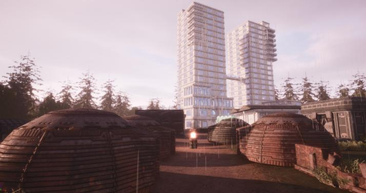
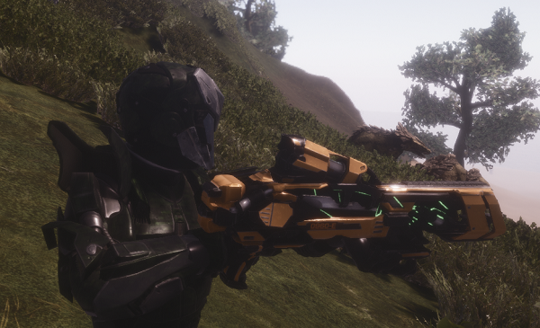
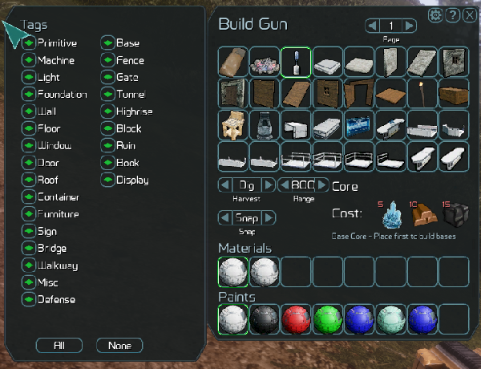
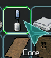

Building is one of the core features of GearStorm. There are a wide variety of things you can build with from the building materials, including: battlements, bridges, doors, garages, lights, walls, and more.
You can build a humble base or a massive city ino GearStorm:
First you must have a build gun to build. The build gun is the Exomarine's Swiss Army Knife, a truely multi-purpose molecular reorganizer, used for digging, resource gathering, and building.
Archon Industries 960-E Matter Reintegrator "BuildGun":
 Once you have your BuildGun, you need to gather resources to build anything. You can see what you need to build a item by clicking on it in the BuildGun menu. Get to the BuildGun menu by equiping it and hitting "q".Build Gun Menu:
 If you have the resources, you are going to want to build a "Core" first. The Core is the first thing you have to build for a base or city and tracks and maintains all the built items in the Core radius. Without a Core, you cannot build most structures.Core:
